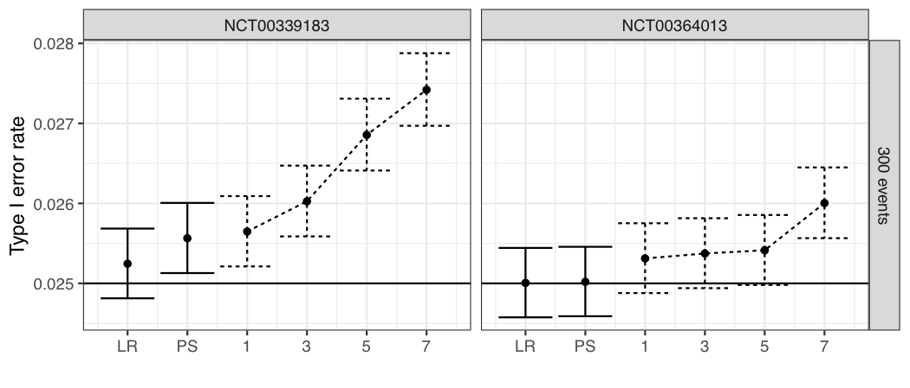

Covariate adjustment simulation studies
Why simulate?
When a sponsor wishes to include covariate adjustment in a trial protocol and statistical analysis plan, simulation studies can be useful both to select a covariate adjustment strategy and to justify to regulators that the selected strategy is appropriate. The questions that a simulation study can answer include:
- Does the testing strategy appropriately control type I error under a range of assumptions regarding the distributions of the covariates and their relationship to the outcome?
- Is the type I error rate adversely affected by using covariate adjustment in a group sequential design or by combining covariate adjustment with other adaptive trial design elements, e.g., information monitoring? (Tsiatis and Davidian, 2026; Van Lancker et al., 2025)
- How will study power and the time to the conclusion of the study be affected by the covariate adjustment strategy, including which covariates are adjusted for (see companion blog of Alex Ocampo) and how missing data are handled (see companion blog of Jiawei Wei)?
- How will covariate adjustment affect the properties of the treatment effect estimate?
How to simulate
Trial elements to account for when carrying out a simulation study include:
- The stratification factors, if any, and the randomization ratio and scheme that will be used, e.g., stratified permuted block randomization
- The proposed adjustment set of covariate(s)
- The design, including group sequential design elements
- The number of patients, enrollment schedule and dropout rate
- If the endpoint type is continuous, its distribution in the various study arms (mean, variance, etc.)
- If the endpoint type is binary, its expected prevalence in the various study arms
- If the endpoint type is ordinal, the prevalence of the various categories and whether proportional odds is assumed to hold
- If the endpoint type is time-to-event, the baseline hazard function, whether proportional hazards is assumed to hold, the target number of events, etc.
- Whether the model used for analysis will be correctly specified
Some considerations when specifying the relationship of covariates to the outcome include:
- The expected prognostic strength of the covariate
- Whether the relationship of covariates to the outcome is assumed to be the same across treatment arms
- Whether the distribution of covariates of patients changes with enrollment time
- In the case of time-to-event outcomes, whether and how the association between covariates and outcomes changes over time
When carrying out a simulation study, it is important to compare operating characteristics to unadjusted methods. Some quantities that can be compared include:
- Standard errors (both their magnitude and whether they are consistent)
- Rejection probabilities under null and alternative hypotheses
- Bias in treatment effect estimates
- Confidence interval coverage
- Power
It is recommended to include Monte Carlo confidence intervals for these quantities. Many replicates may be required to show that rejection probabilities under the null are well controlled. When evaluating bias in treatment effect estimates, calculating the “true” value of the treatment effect may be challenging if it is a complicated function of the parameters used to design the simulation study. In this case, Monte Carlo simulation or numerical integration methods (Ocampo et al., 2026) may be used.
Although it is ideal for the simulation study to faithfully reflect aspects of the planned trial design, it may also be useful to simulate under different designs, e.g., it may be useful to simulate smaller or larger trials to further evaluate the finite sample size performance of the methods proposed to be used.
Note that special challenges may arise when designing a simulation study when a conditional estimand is used, as the estimand itself may change when covariate adjustment is used.
An alternative to simulation which may be more realistic as to the distribution of covariates and outcomes, but without incorporating all relevant features of a planned trial, is to resample from real trial data. For example, to evaluate the type I error rate of a method, we can use datasets repeatedly resampled from an actual trial with random assignment of treatment. This method will evaluate the type I error rate under a stricter null hypothesis than would normally be tested. For example, with time-to-event data, random assignment of treatment makes the censoring distribution identical between the arms, which may be unrealistic, and is not a required assumption for the log-rank test. It is more difficult to use resampling to study operating characteristics under a given alternative hypothesis. In this case, it may be useful to resample baseline covariates but simulate the outcome from a parametric model, see, e.g., Van Lancker et al. (2025).
Case study
We use a planned metastatic colorectal cancer (mCRC) trial with overall survival (OS) as the primary endpoint as a case study to illustrate some features of a covariate adjustment simulation study and to illustrate the resampling approach mentioned above. Our aims are to assess whether the proposed analysis methods control the type I error rate for the planned trial design, whether the hazard ratio estimate will be unbiased and have the right confidence interval coverage, and how power depends on the prognostic power of the covariate. Here, we are interested in power gains but also in whether power will be lost if the covariate turns out to have no prognostic power.
We assume a median OS of 18 months in the control arm and a hazard ratio of 0.68 under the alternative. The trial uses an O’Brien-Fleming group sequential design with one interim analysis at 70% of information, 1:1 randomization, 2% annual dropout, and uniform enrollment over 12 months. We target 90% power at a two-sided significance level of 0.05. We assume that we are adjusting for one continuous covariate, which we assume is normally distributed.
The design requires 287 events at the final analysis; we round up to 300 events (interim at 210). We enroll 600 patients over 12 months.
Simulation setup
We simulate 600 patients enrolled uniformly over 12 months, with 2% annual dropout. Patients are assigned to one of four equally sized strata, and within each stratum treatment is assigned using 1:1 permuted block randomization with blocks of size 4. We adjust for a single continuous baseline covariate \(X_i \sim N(0,1)\). Event times are generated from a proportional hazards model
\[ h(t \mid X_i) = h_0(t) \exp(\beta X_i + \theta I_i), \]
where \(I_i \in \{0,1\}\) is the treatment indicator, \(\theta = \log(\text{HR})\) is the log hazard ratio, and \(\beta\) controls the prognostic strength of the covariate. The only parameters we vary in this simulation study are \(\beta\) and \(\theta\). We set \(\beta \in \{0, 0.5, 1\}\) and consider \(\theta = 0\) (null) and \(\theta = \log(0.68)\) (alternative). The baseline hazard \(h_0(t)\) is chosen so that event times are marginally exponentially distributed with median 18 months in the control arm, regardless of \(\beta\). This is achieved using the inverse cumulative hazard method (Bender et al., 2005). Event times are simulated separately for each combination of stratum and arm. We assume the stratification variable does not affect survival, i.e., strata membership is ignored when simulating the outcomes.
We evaluate the type I error rate of the unadjusted stratified log-rank test and the covariate-adjusted stratified log-rank test (Ye et al., 2024) at both the interim (210 events) and final (300 events) analyses, applying O’Brien-Fleming critical values. The covariate-adjusted stratified log-rank test tests exactly the same null hypothesis as the unadjusted stratified log-rank test. We evaluate the treatment effect using a stratified Cox proportional hazards model with only a term for treatment and also using the hazard ratio estimator under the stratified Cox proportional hazards model of Ye et al. (2024). The hazard ratio that is estimated is marginal with respect to the adjustment covariates. We evaluate its bias and the coverage of its confidence interval. We run 2,000,000 simulation replicates for each scenario. These covariate-adjusted methods are implemented in the R packages RobinCar and RobinCar2.
Simulation results
Type I error at the final analysis
| \(\beta\) | Unadjusted | Adjusted |
|---|---|---|
| 0 | 0.0251 (0.0249, 0.0253) | 0.0253 (0.0251, 0.0255) |
| 0.5 | 0.0250 (0.0248, 0.0252) | 0.0251 (0.0249, 0.0253) |
| 1 | 0.0251 (0.0249, 0.0253) | 0.0249 (0.0247, 0.0252) |
As can be seen in Table 1, both the unadjusted and adjusted tests maintain type I error rates close to the nominal one-sided level of 0.025 across all values of \(\beta\), including when the covariate is strongly prognostic (\(\beta = 1\)), although there is slight inflation of the type I error rate when the covariate is not prognostic at all (\(\beta = 0\)).
Type I error in the group sequential design
| \(\beta\) | Unadjusted | Adjusted |
|---|---|---|
| 0 | 0.0251 (0.0248, 0.0253) | 0.0253 (0.0251, 0.0255) |
| 0.5 | 0.0250 (0.0247, 0.0252) | 0.0253 (0.0250, 0.0255) |
| 1 | 0.0250 (0.0248, 0.0253) | 0.0257 (0.0255, 0.0259) |
As can be seen in Table 2, when the covariate-adjusted log-rank test is embedded in a group sequential design, the type I error rate is slightly inflated, and the inflation is greater the more prognostic the covariate is. To avoid this inflation, the methods of Tsiatis and Davidian (2026) or Van Lancker et al. (2025) could be used.
Power in the group sequential design
| \(\beta\) | Unadjusted | Adjusted |
|---|---|---|
| 0 | 0.9092 (0.9088, 0.9096) | 0.9092 (0.9088, 0.9096) |
| 0.5 | 0.9095 (0.9091, 0.9099) | 0.9366 (0.9363, 0.9370) |
| 1 | 0.9093 (0.9089, 0.9097) | 0.9750 (0.9747, 0.9752) |
Table 3 shows that when the covariate has no prognostic value (\(\beta = 0\)), the adjusted and unadjusted tests have nearly identical power, consistent with the theoretical guarantee in Ye et al. (2024) that covariate adjustment does not reduce power asymptotically. The adjusted test gains substantial power over the unadjusted test. This illustrates the potential efficiency gains from adjusting for a strongly prognostic covariate, while indicating that efficiency is not expected to suffer if the covariate turns out not to have prognostic power.
Hazard ratio estimate and confidence interval coverage
| \(\beta\) | Scenario | Unadj. Mean HR | Unadj. CI Coverage | Adj. Mean HR | Adj. CI Coverage |
|---|---|---|---|---|---|
| 0 | Null | 1.000 | 0.9503 (0.9500, 0.9506) | 1.000 | 0.9502 (0.9499, 0.9505) |
| 0.5 | Null | 1.000 | 0.9505 (0.9502, 0.9508) | 1.000 | 0.9503 (0.9500, 0.9506) |
| 1 | Null | 1.000 | 0.9502 (0.9499, 0.9505) | 1.000 | 0.9505 (0.9502, 0.9508) |
| 0 | Alternative | 0.680 | 0.9503 (0.9500, 0.9506) | 0.680 | 0.9501 (0.9498, 0.9504) |
| 0.5 | Alternative | 0.680 | 0.9504 (0.9501, 0.9507) | 0.680 | 0.9503 (0.9500, 0.9506) |
| 1 | Alternative | 0.680 | 0.9504 (0.9501, 0.9507) | 0.680 | 0.9501 (0.9498, 0.9504) |
As shown in Table 4, under both the null and alternative hypotheses, the mean estimated hazard ratio is close to the true value (1.0 and 0.68, respectively) for both the unadjusted and adjusted estimators. Confidence interval coverage is close to the nominal 95% level in all scenarios.
Resampling study
To evaluate the Type I error rate of the covariate-adjusted log-rank test in a realistic setting, we apply a bootstrap resampling approach to data from an actual mCRC trial (NCT00339183, available from Project Data Sphere).
For each replicate, patients are sampled with replacement from the trial data until the resampled dataset contains 300 events. Treatment labels are then randomly reassigned within each randomization stratum, replicating the stratified permuted block randomization used in the original trial. This enforces the strong null hypothesis — that each patient has the same hazard function under treatment and control — so any rejection of the null constitutes a type I error. The type I error rate is estimated over 500,000 replicates.
We evaluate three analysis strategies: the unadjusted log-rank test (LR), the covariate-adjusted log-rank test adjusting for the Bachet prognostic score (PS), and the covariate-adjusted log-rank test adjusting for the individual component variables of the Bachet score added one at a time (1 through 7 variables). The Bachet score (Bachet et al., 2025, Journal of Clinical Oncology) is a composite prognostic score for overall survival in mCRC derived from seven baseline variables: alkaline phosphatase, hemoglobin, ECOG PS, lactate dehydrogenase, absolute neutrophil count, number of metastatic sites, and platelet count. When the component variables are added one at a time they are added in the above order, which was determined using an independent mCRC trial dataset via a Cox proportional hazards model with a LASSO penalty.

The unadjusted log-rank test and adjustment for the Bachet prognostic score both maintain type I error rates close to the nominal 0.025 level (see Figure 1). As more individual component variables are added, the type I error rate increases. A small sample size correction (Krotka and Magirr, 2026) might be helpful to control the type I error rate when many variables are adjusted for.
References
Bachet, J.-B., et al. (2025). Characteristics of patients and prognostic factors across treatment lines in metastatic colorectal cancer: an analysis from the Aide et Recherche en Cancérologie Digestive database. Journal of Clinical Oncology, 43(18), 2094–2106. https://doi.org/10.1200/JCO-24-01968
Bender, R., Augustin, T., and Blettner, M. (2005). Generating survival times to simulate Cox proportional hazards models. Statistics in Medicine, 24(11), 1713–1723. https://doi.org/10.1002/sim.2059
Krotka, P and Magirr, D. (2026). Finite-sample correction for the covariate-adjusted log-rank test. https://arxiv.org/abs/2608.10923
Ocampo, A., Giudice, E., McCaw, Z. R., and Morris, T. P. (2026). Revealing the truth: calculating true values in causal inference simulation studies via Gaussian quadrature. arXiv preprint arXiv:2601.05128. https://doi.org/10.48550/arXiv.2601.05128
Tsiatis, A. A. and Davidian, M. (2026). Independent increments and group sequential tests. Statistics in Medicine. https://doi.org/10.1002/sim.70307
Van Lancker, K., Betz, J. F., and Rosenblum, M. (2025). Combining covariate adjustment with group sequential, information-adaptive designs to improve randomized trial efficiency. Biometrics, 81(1), ujaf020. https://doi.org/10.1093/biomtc/ujaf020
Ye, T., Shao, J., and Yi, Y. (2024). Covariate-adjusted log-rank test: guaranteed efficiency gain and universal applicability. Biometrika, 110(4), 1097–1110. https://doi.org/10.1093/biomet/asad045